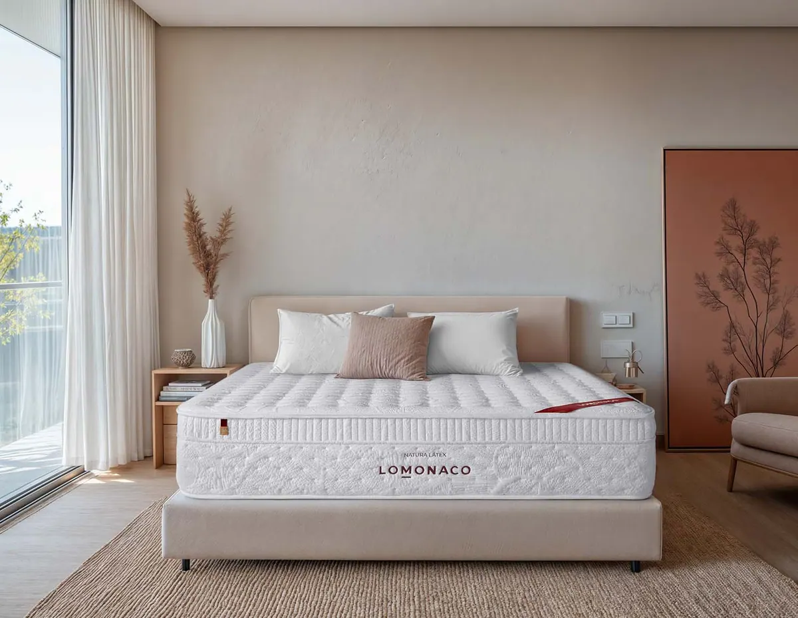
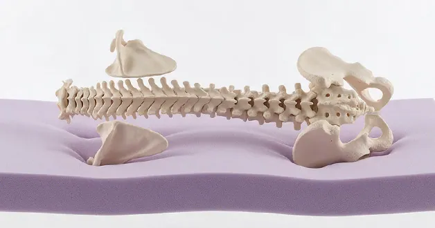
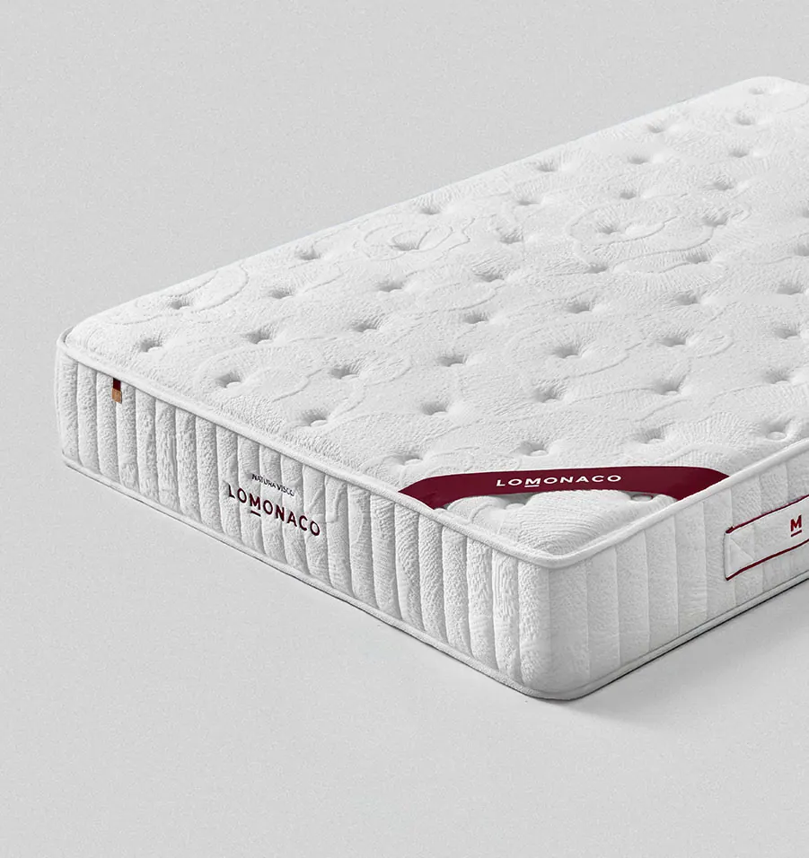
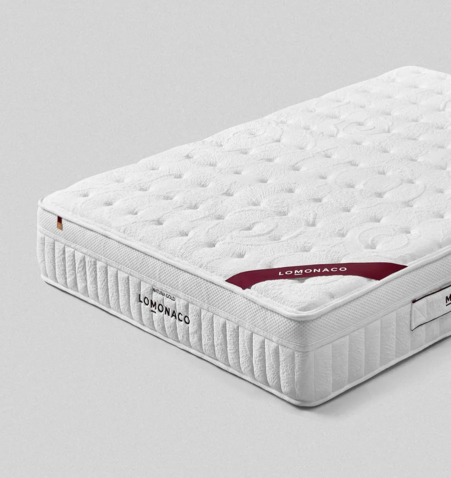
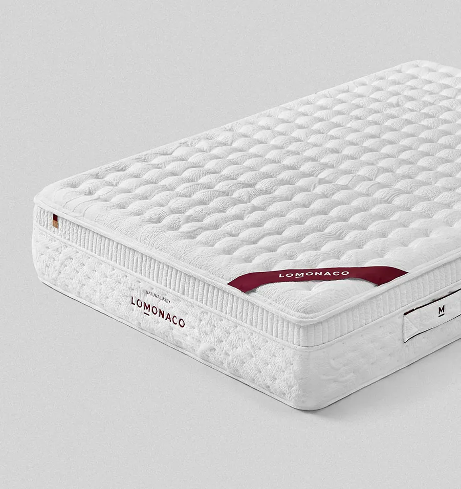
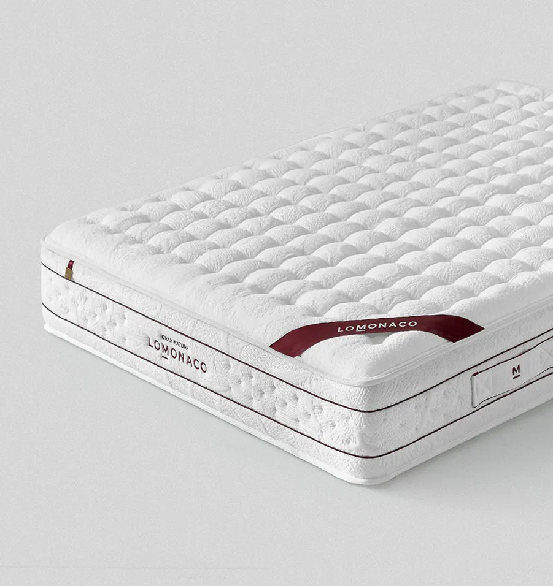

Látex, viscoelástica o muelles ensacados: cuál elegir

Látex, viscoelástica y muelles ensacados son los tres materiales que más se comparan al elegir colchón, y la diferencia se nota al tumbarse: cambia cómo te sujeta, cuánto calor da y cuánto notas los movimientos de quien duerme a tu lado. En esta guía te explicamos cada uno, los comparamos punto por punto y te decimos cuál encaja con tu forma de dormir.
Respuesta rápida
No hay un material mejor que otro: depende de cómo duermes.
- Viscoelástica: te envuelve y alivia la presión. Para quien busca acogida y una sensación firme y estable.
- Látex: se adapta y recupera su forma al instante. Para quien duerme de lado o pasa calor.
- Muelles ensacados: sujetan, ventilan y aíslan los movimientos. Para parejas y para quien quiere un apoyo firme.
Los colchones actuales suelen combinar materiales: un núcleo de muelles ensacados con capas de látex o de viscoelástica encima.
¿Qué diferencia hay entre látex, viscoelástica y muelles ensacados?
La viscoelástica es una espuma que se amolda despacio al cuerpo con el calor y la presión. El látex es un material elástico que se adapta y vuelve a su forma al momento. Los muelles ensacados son un núcleo de muelles metidos cada uno en su bolsa de tela, que trabajan por separado y dejan pasar el aire.
- ViscoelásticaReacciona a la temperatura y al peso: se hunde poco a poco donde más presionas (hombros y cadera) y reparte la carga. Da una sensación de «hundirse un poco» y de estabilidad. Se usa como capa de confort sobre un núcleo de espuma HR o de muelles. Es la base de nuestros colchones viscoelásticos.
- LátexEs elástico: cede donde hace falta y empuja de vuelta enseguida, así que te sujeta sin que te quedes «atrapado» al girarte. Su estructura deja circular el aire, por eso suele ser más fresco que la viscoelástica.
- Muelles ensacadosCada muelle va en su propia bolsa y se mueve de forma independiente, por eso lo que hace una persona apenas se nota en el otro lado. Entre los muelles circula el aire, lo que ayuda a ventilar el colchón. Casi siempre llevan encima capas de látex, viscoelástica o espuma. Es el núcleo de nuestros colchones de muelles ensacados.

Comparativa: látex, viscoelástica y muelles ensacados
El látex gana en frescor y en adaptabilidad; la viscoelástica, en acogida y en aliviar la presión; y los muelles ensacados, en independencia de lechos y ventilación. Por eso los colchones que combinan muelles con látex o con viscoelástica reúnen lo mejor de dos materiales.
| Característica | Viscoelástica | Látex | Muelles ensacados |
|---|---|---|---|
| Sensación al tumbarte | Te envuelve | Elástica | Firme y estable |
| Adaptación al cuerpo | Alta | Muy alta | Media |
| Frescor | Media | Alta | Muy alta |
| Independencia de lechos | Alta | Media | Muy alta |
| Facilidad para girarte | Media | Alta | Alta |
| Alivio de la presión | Muy alto | Alto | Medio |
Comparación general entre materiales. Cada colchón cambia según el grosor de sus capas y su núcleo: en nuestras fichas damos la firmeza y la adaptabilidad de cada modelo en una escala de 0 a 100.
¿Cuál es mejor según cómo duermes?
De lado, el látex, porque deja entrar hombro y cadera sin perder sujeción. Boca arriba, muelles ensacados con viscoelástica, que sostienen la zona lumbar. Boca abajo, el modelo más firme de tu rango, con núcleo de espuma HR o 100 % látex. Si pesas más de 90 kg, prioriza siempre un núcleo firme.
- Si duermes de ladoNecesitas adaptabilidad para que la columna quede recta. Un colchón de látex sobre muelles ensacados como el Natura Látex, el más adaptable de los de muelles, es lo que mejor funciona.
- Si duermes boca arribaBusca firmeza media-firme y que la zona lumbar no quede en el aire. Los muelles ensacados con viscoelástica del Natura Gold dan ese equilibrio.
- Si duermes boca abajoNecesitas más firmeza para que la pelvis no se hunda. El Natura Visco, viscoelástico sobre núcleo HR, y el Gran Natura, con núcleo 100 % látex, son nuestros modelos más firmes.
- Si cambias mucho de posturaElige un material que reaccione rápido al movimiento: el látex y los muelles ensacados no te frenan al girarte.
La postura es solo una parte de la decisión: tu peso también cuenta. En nuestra guía sobre la firmeza del colchón tienes la tabla que cruza las dos cosas.
Consejo del Asesor del Descanso. Muchas personas eligen la viscoelástica porque «es la que se lleva». Antes de decidir, piensa en dos cosas: si pasas calor por la noche y si duermes acompañado. Esas dos respuestas suelen inclinar la balanza más que el material en sí.
¿Y si pasas calor o duermes en pareja?
Si pasas calor, elige látex o muelles ensacados, que ventilan mejor que la viscoelástica. Si duermes en pareja, elige un núcleo de muelles ensacados: cada muelle trabaja por separado y los movimientos de uno apenas llegan al otro.
Si pasas calor por la noche
- Látex: su estructura deja pasar el aire
- Muelles ensacados: el aire circula por el núcleo
- Viscoelástica, solo con tejidos y fibras termorreguladoras
- Un protector transpirable también ayuda
Si duermes en pareja
- Núcleo de muelles ensacados para la independencia de lechos
- Firmeza pensada para la persona de más peso
- Una medida de al menos 150 cm de ancho
- Capa de confort de látex o de viscoelástica, según gustos
Si sois dos con pesos muy distintos, te lo explicamos con detalle en nuestra guía del colchón para parejas.
¿Qué tiene de especial un colchón de látex?
El látex combina tres cosas que pocos materiales reúnen: se adapta mucho al cuerpo, recupera su forma al instante y es transpirable. Por eso es una buena elección para quien duerme de lado, pasa calor o cambia de postura a menudo. Es también un material más denso y pesado que la espuma.
En LOMONACO trabajamos el látex de dos formas, porque no todo el mundo busca lo mismo:
- 100 % látexEl Gran Natura tiene el núcleo entero de látex. Es nuestro colchón más adaptable (100 sobre 100) y, a la vez, de firmeza media-alta: acoge el cuerpo sin hundirse. Es el más indicado si buscas la máxima adaptación con una base firme.
- Látex sobre muelles ensacadosEl Natura Látex combina una capa de látex con un núcleo de muelles ensacados. Suma la adaptación del látex a la ventilación y la independencia de lechos de los muelles. Es el de firmeza más media de nuestra gama.
Puedes ver los dos en nuestra categoría de colchones de látex. Y si te gusta la sensación del látex, también la tienes en la almohada de látex.
¿Tienes alergia al látex? Si tienes una alergia diagnosticada al látex, consulta con tu médico antes de elegir un colchón de este material. En ese caso, un colchón viscoelástico o de muelles ensacados con viscoelástica es una alternativa sin látex.
¿Qué colchón LOMONACO corresponde a cada material?
Tenemos un colchón para cada combinación: Natura Visco (viscoelástica sobre núcleo HR), Natura Gold (muelles ensacados con viscoelástica), Natura Látex (látex sobre muelles ensacados) y Gran Natura (núcleo 100 % látex). Los cuatro están en la franja de firmeza media y media-firme y tienen 10 años de garantía.
| Colchón | Núcleo | Capa de confort | Firmeza | Adaptabilidad | Ideal para |
|---|---|---|---|---|---|
| Natura Visco | Espuma HR | Viscoelástica y HR | 85 | 70 | Más de 90 kg, boca abajo |
| Natura Gold | Muelles ensacados | Viscoelástica y HR | 80 | 80 | Parejas, boca arriba |
| Natura Látex | Muelles ensacados | Látex, algodón y HR | 75 | 85 | De lado, calor |
| Gran Natura | 100 % látex | Capas de confort y HR de soporte | 85 | 100 | Máxima adaptación |
Firmeza y adaptabilidad en una escala de 0 a 100, según la ficha técnica de cada modelo (3 de noviembre de 2026).

Natura Visco
- Viscoelástica sobre núcleo HR
- Firmeza media-alta

Natura Gold
- Muelles ensacados y viscoelástica
- Ideal para parejas

Natura Látex
- Látex sobre muelles ensacados
- Muy adaptable y fresco

Gran Natura
- Núcleo 100 % látex
- La máxima adaptabilidad
¿Dudas entre dos materiales? Te ayudamos a elegir
Cuéntale a un Asesor del Descanso cómo duermes, si pasas calor y si duermes acompañado, y te dirá qué colchón encaja contigo. Es gratis y sin compromiso, y tienes 14 noches de prueba en casa.
Hablar con un asesorVer colchonesNuestra recomendación
Si duermes de lado o pasas calor, ve a por el látex: el Natura Látex si además quieres muelles, o el Gran Natura si buscas la máxima adaptación. Si duermes en pareja o boca arriba, un colchón de muelles ensacados con viscoelástica como el Natura Gold es la opción más equilibrada. Y si pesas más de 90 kg o duermes boca abajo, elige el Natura Visco o el Gran Natura, los más firmes de nuestra gama.
Preguntas frecuentes sobre látex, viscoelástica y muelles ensacados
¿Qué es mejor, un colchón de látex o viscoelástico?
Depende de cómo duermes. El látex es más fresco, más elástico y más fácil para girarse, por eso va mejor si duermes de lado o pasas calor. La viscoelástica envuelve más el cuerpo y alivia mejor la presión, y suele preferirse si buscas una sensación de acogida y estabilidad.
¿Qué colchón da menos calor?
Los de látex y los de muelles ensacados, porque dejan circular el aire. La viscoelástica tiende a guardar más calor, aunque los tejidos y fibras termorreguladoras de las capas superiores reducen mucho esa sensación.
¿Cuánto dura un colchón de látex?
El látex recupera muy bien su forma y es un material duradero, pero como cualquier colchón pierde propiedades con el uso. En LOMONACO nuestros colchones tienen 10 años de garantía y recomendamos cambiarlos a los diez años para que la espalda siga bien sujeta.
¿Qué es un colchón híbrido?
Es un colchón que combina un núcleo de muelles ensacados con capas de otro material encima, normalmente látex o viscoelástica. Une la ventilación y la independencia de lechos de los muelles con la adaptación de la capa superior. El Natura Gold y el Natura Látex son híbridos.
¿Qué tipo de colchón es mejor para parejas?
Uno con núcleo de muelles ensacados, porque cada muelle trabaja por separado y los movimientos de una persona apenas se notan en el otro lado. Conviene elegir la firmeza pensando en la persona de más peso y una medida de al menos 150 cm de ancho.
Elige tu colchón por medida
Colchón 90×190 Colchón 90×200 Colchón 105×190 Colchón 105×200 Colchón 135×180 Colchón 135×190 Colchón 140×200 Colchón 150×190 Colchón 150×200 Colchón 160×200 Colchón 180×200 Colchón 200×200
Completa tu cama
Canapé abatible Packs colchón y canapé Almohada viscoelástica Protector de colchón impermeable
Fuentes
- Fichas técnicas de los colchones Natura Visco, Natura Gold, Natura Látex y Gran Natura de LOMONACO: núcleo, capas, firmeza y adaptabilidad (consultadas el 3 de noviembre de 2026).
- Experiencia del equipo de Asesores del Descanso de LOMONACO con las consultas sobre materiales de colchón.